| 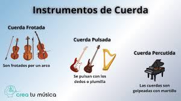 |  |
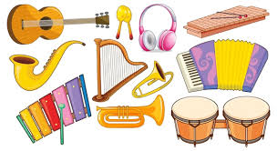Un instrumento musical es un sistema compuesto por la combinaci�n de uno o m�s sistemas resonantes y medios para su vibraci�n, construido con el fin de producir sonido en uno o m�s tonos que puedan ser combinados por un int�rprete para producir m�sica. Al final, cualquier cosa que produzca sonido arm�nico puede servir
de instrumento musical, pero la expresi�n se reserva, generalmente, a objetos que tienen ese prop�sito en espec�fico.
| instrumentos | nombres |
|---|---|
| 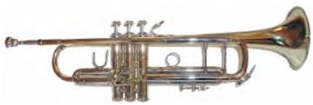 |
Trompeta |
| 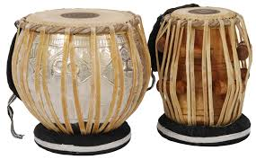 |
Tabla |
| 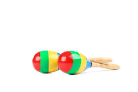 |
Maracas |
Los estudiosos est�n de acuerdo en que no existen m�todos completamente fiables para determinar la cronolog�a exacta de los instrumentos musicales en las distintas culturas. Comparar y organizar los instrumentos en funci�n de su complejidad es enga�oso, ya que los avances en los instrumentos musicales a veces han reducido la complejidad. Por ejemplo, la construcci�n de los primeros tambores de hendidura implicaba la tala y el ahuecamiento de grandes �rboles; los tambores de hendidura posteriores se hac�an abriendo tallos de bamb�, una tarea mucho m�s sencilla.
Los instrumentos musicales se agrupan en familias dependiendo de la forma que se utilizan para poder obtener de ellos su particular sonido. Estas familias son:
En todos los instrumentos de esta familia el sonido se produce por la vibraci�n de una cuerda que est� tensada. Esta vibraci�n se puede producir de varias formas:
| 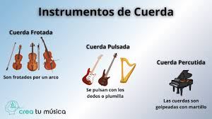 | |
Hay dos familias dentro de estos instrumentos: viento madera y viento metal. No es que s�lo se diferencien por el material de que est�n hechos, ya que los de madera incluyen instrumentos met�licos que en su d�a fueron de madera o cuya forma de producir sonido era a trav�s de una ca�a. Para diferenciasrlos hay que tener en cuenta las siguientes diferencias:
| 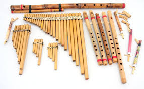 | 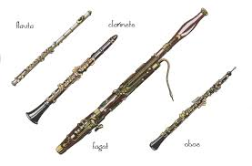 |
| 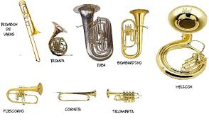 | 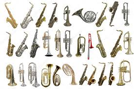 |
Se definen como instrumentos de percusi�n a todos aquellos cuya superficie resonadora es golpeada, sacudida o frotada por el ejecutante. El origen etimol�gico de la palabra percusi�n procede del verbo latino percutere, que significa golpear, batir. Sin dudas, es en este tipo de instrumentos donde mejor se manifiesta la relaci�n causa-efecto, pues es el mismo golpe el responsable directo de la producci�n del sonido.
| 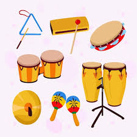 | 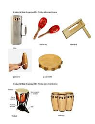 |